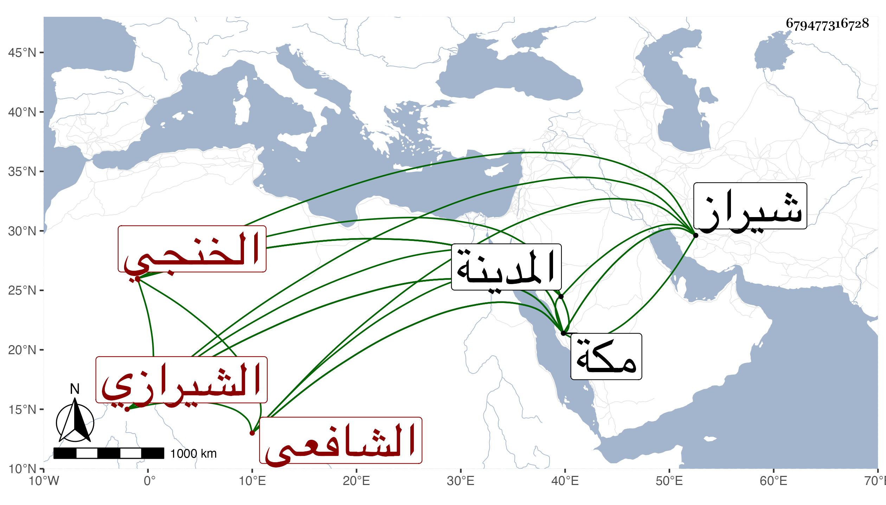

0902Sakhawi.DawLamic.ITO20230111-ara1.EIS1600.679477316728
Biography ID: 679477316728
27
محمد المدعو شمس الدين بن محمد بن أحمد بن عبد العزيز بن عبد السلام الخنجي الشيرازي الشافعي نزيل مكة . ولد سنة ست وستين بخنج وارتحل بعد بلوغه إلى شيراز فاشتعل بالصرف والنحو والمعاني وغيرها على جماعة أجلهم المولى أبو يزيد الدواني حتى شارك ورجع لبلده فأقام بها إلى بعد الثمانين ثم سافر لمكة فحج وقطنها وزار المدينة واجتمع بي بمكة في المجاورة الرابعة فقرأ علي في الحصن الحصين والمشكاة وسمع غيره ثم لازمني في التي بعدها حتى سمع صحيح مسلم وأشياء وكتب بعض تصانيفي ، وكتبت له إجازة في كراسة وصفته فيها بالشيخ الفاضل الأوحد الكامل العلامة الفهامة المفنن المزين المتوجه للسلوك والأنجماع والموجه لما يرجى له به الانتفاع لطف الله به إقامته وسفره وصرف عنه كل كدر موصل لضرره ، ولزم عبد المعطي حتى أخذ عنه العوارف وغيره كالأحياء وهو مع فضيلته فقير قانع سالك متجرد حسن الخط وربما تكسب بذلك ، وذكر لي أن أباه كان عالما وأنه ينتمي لإبراهيم الخنجي محدث شراز بقرابة ونعم الرجل .
